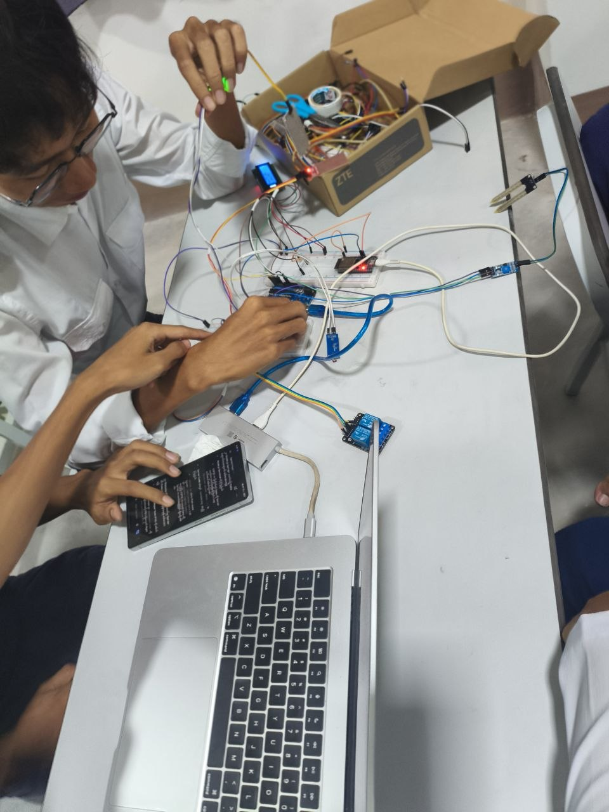
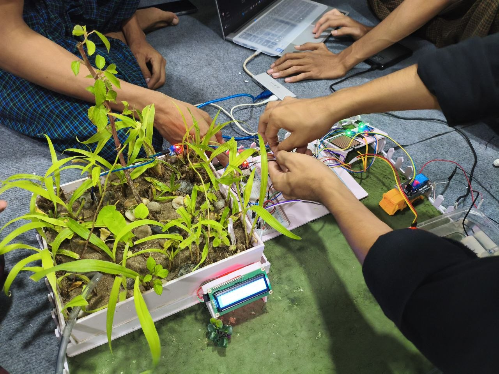
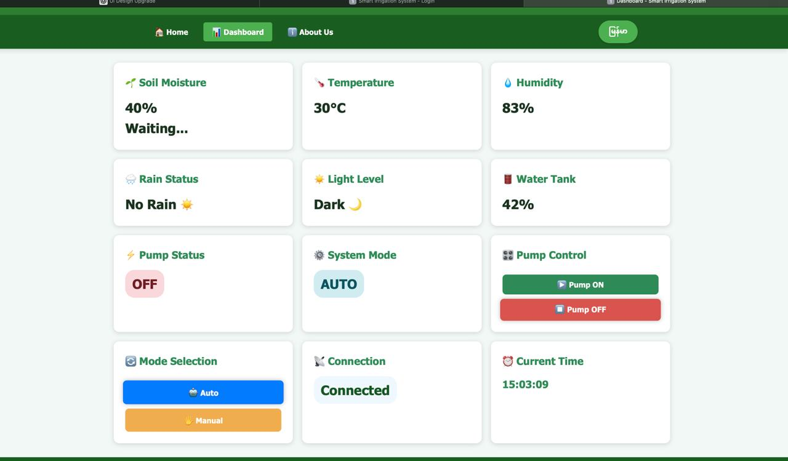

IoT အခြေခံ အလိုအလျောက် စိုက်ပျိုးရေး ရေသွင်းစနစ်
စနစ်နှင့် ချိတ်ဆက်ပြီးပါပြီ။ Project ၏ လုပ်ဆောင်ချက် အသေးစိတ်ကို အောက်တွင် ကြည့်ရှုနိုင်ပါသည်။
ဒီ Project ကတော့ ESP32 Microcontroller နဲ့ Arduino Uno တို့ကို ပေါင်းစပ်အသုံးပြုထားပြီး၊ ကိုယ်တိုင် ဖန်တီးတည်ဆောက်ထားသည့် Custom Node.js Server ဖြင့် မောင်းနှင်သော IoT-based Smart Irrigation System (အလိုအလျောက် ရေသွင်းစနစ်) ဖြစ်ပါတယ်။ မြေဆီလွှာ စိုထိုင်းဆနှင့် ရာသီဥတု အခြေအနေများကို အချိန်နှင့်တစ်ပြေးညီ စောင့်ကြည့်ပြီး သီးနှံများ လိုအပ်သည့်အချိန်၌သာ အလိုအလျောက် ရေလောင်းပေးနိုင်အောင် စနစ်တကျ ဖန်တီးထားခြင်း ဖြစ်ပါသည်။
• Sensor Data ရယူခြင်း - Soil Moisture Sensor၊ Rain Sensor များနှင့် တိုက်ရိုက်ချိတ်ဆက်ထားပြီး ပတ်ဝန်းကျင်ဆိုင်ရာ Analog/Digital အချက်အလက်များကို တိကျစွာ ဖတ်ယူပေးပါသည်။
• Communication - ဖတ်ယူရရှိသော Sensor Data များကို Serial Communication မှတစ်ဆင့် ESP32 ထံသို့ ပို့ဆောင်ပေးပါသည်။
• Wi-Fi Connectivity & IoT Gateway - Arduino Uno ထံမှ ရရှိလာသော Data များကို Wi-Fi ကွန်ရက်မှတစ်ဆင့် ကိုယ်တိုင် ရေးသားထားသော Node.js Server သို့ ပို့ဆောင်ပေးပါသည်။
• Output Execution - Server/Logic မှ ပြန်လာသော အမိန့်အတိုင်း Relay Module များကို ထိန်းချုပ်၍ Water Pump ရေပန့်မော်တာများကို အဖွင့်/အပိတ် ပြုလုပ်ပေးပါသည်။
စနစ်စတင်သည်နှင့် Arduino Uno သည် တပ်ဆင်ထားသော Sensor များမှ Soil Moisture နှင့် Rain Data များကို စတင်တိုင်းတာပါသည်။
Arduino Uno မှ Data များကို ESP32 သို့ ပို့ပေးပြီး၊ ESP32 က Wi-Fi ကွန်ရက်မှတစ်ဆင့် Custom Node.js Server ထံသို့ အချက်အလက်များ ပို့ဆောင်ပေးပါသည်။
ကိုယ်တိုင် တည်ဆောက်ထားသော Node.js Server မှ ရရှိလာသော Sensor Data များကို လက်ခံစစ်ဆေးပြီး ရေလောင်းရန် လို/မလို ဆုံးဖြတ်ချက် တွက်ချက်ပေးပါသည်။
Server ၏ ဆုံးဖြတ်ချက်အတိုင်း ESP32 ထံ အကြောင်းပြန်ပေးပြီး၊ ESP32 က Relay Module မှတစ်ဆင့် Water Pump (ရေပန့်) ကို အလိုအလျောက် ပွင့်စေ/ပိတ်စေ ပါသည်။
ရေပန့် ပွင့်/ပိတ်သည့် အခြေအနေနှင့် တိုင်းတာရရှိသမျှ အချက်အလက်များကို Web Dashboard ပေါ်တွင် Real-time (အချိန်နှင့်တစ်ပြေးညီ) ပို့ဆောင်ပြသပေးပါသည်။
• ရေလောင်းမည့် အခြေအနေ - Soil Moisture Sensor မှ မြေဆီလွှာ စိုထိုင်းဆ 30% အောက် လျော့နည်းသွားပါက ရေပန့်မော်တာ ပွင့်ပြီး အလိုအလျောက် ရေလောင်းပေးမည်။
• မိုးရွာပါက စောင့်ဆိုင်းမည့် အခြေအနေ - မြေဆီလွှာ စိုထိုင်းဆ 30% အောက် ရောက်နေသော်လည်း Rain Sensor က Rain (Yes) ဟု ပြနေပါက မိုးရွာနေသည့်အတွက် ရေပန့် မပွင့်ဘဲ မိုးစဲသည်အထိ စောင့်ဆိုင်းမည်။
Manual Mode ကို ပြောင်းလဲလိုက်ပါက Sensor များ၏ သတ်မှတ်ချက်အတိုင်း မဟုတ်ဘဲ Web Dashboard မှတစ်ဆင့် အသုံးပြုသူ ကိုယ်တိုင် ရေပန့်မော်တာကို အဖွင့်/အပိတ် ပြုလုပ်နိုင်သည်။
Wi-Fi ချိတ်ဆက်မှုနှင့် Node.js Server သို့ Data များ ပို့ဆောင်ပေးသည့် မိုခရိုကွန်ထရိုလာ။
Sensor များထံမှ Analog/Digital Data များကို တိကျစွာ ဖတ်ယူပေးသည့် Controller။
ကိုယ်တိုင် ရေးသားဆောက်လုပ်ထားပြီး Data စစ်ဆေးမှုနှင့် Logic စီမံပေးသည့် Server စနစ်။
မြေဆီလွှာ၏ စိုထိုင်းဆ % ကို တိကျစွာ တိုင်းတာပေးသည့် Sensor။
မိုးရွာနေခြင်း ရှိ/မရှိ စစ်ဆေးပေးသည့် မိုးရေစိမ့် Sensor။
ESP32 ၏ အမိန့်အတိုင်း ရေပန့်ကို အလိုအလျောက် အဖွင့်/အပိတ် ပြုလုပ်ပေးသည့် မော်တာ စနစ်။


